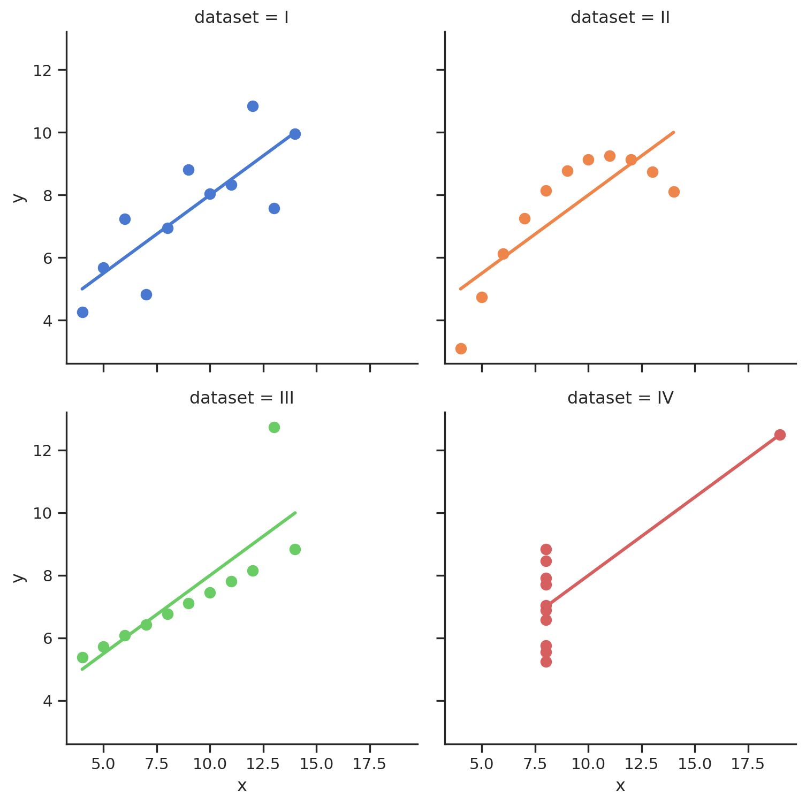
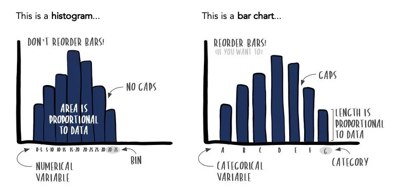
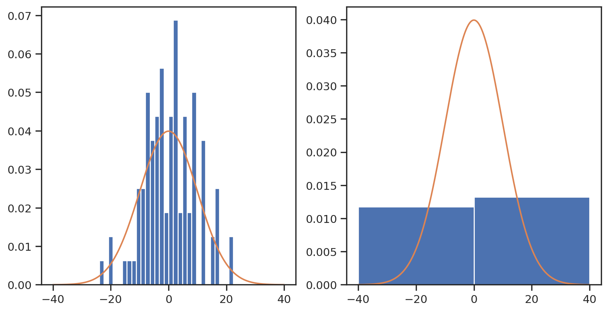
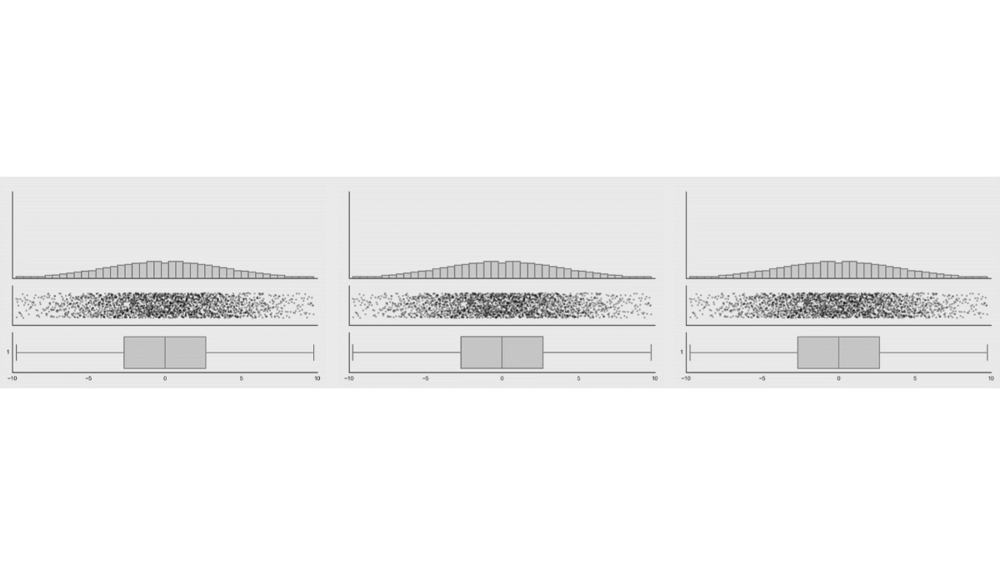
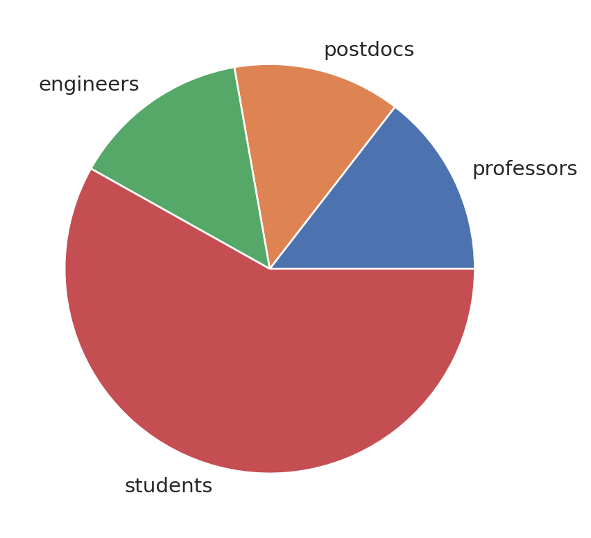
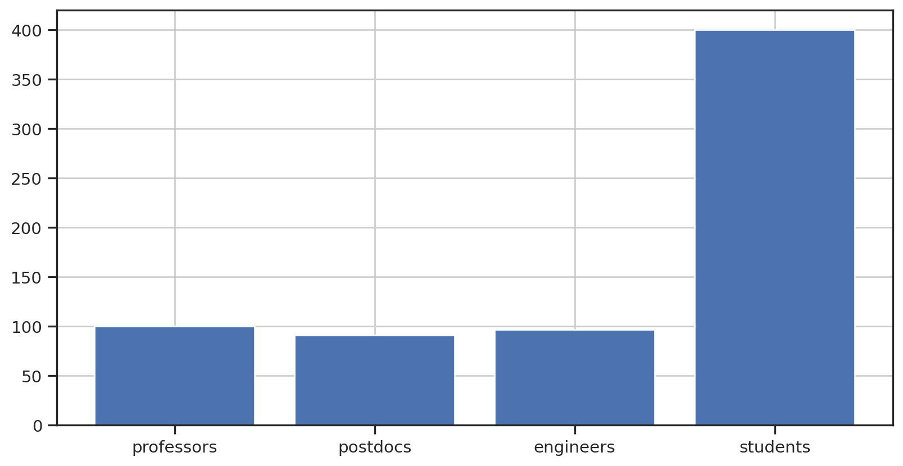

x y
dataset I II III IV I II III IV
g
0 10.0 10.0 10.0 8.0 8.04 9.14 7.46 6.58
1 8.0 8.0 8.0 8.0 6.95 8.14 6.77 5.76
2 13.0 13.0 13.0 8.0 7.58 8.74 12.74 7.71
3 9.0 9.0 9.0 8.0 8.81 8.77 7.11 8.84
4 11.0 11.0 11.0 8.0 8.33 9.26 7.81 8.47
5 14.0 14.0 14.0 8.0 9.96 8.10 8.84 7.04
6 6.0 6.0 6.0 8.0 7.24 6.13 6.08 5.25
7 4.0 4.0 4.0 19.0 4.26 3.10 5.39 12.50
8 12.0 12.0 12.0 8.0 10.84 9.13 8.15 5.56
9 7.0 7.0 7.0 8.0 4.82 7.26 6.42 7.91
10 5.0 5.0 5.0 8.0 5.68 4.74 5.73 6.89Visual data: from raw data to publication
Matteo Tomasini, GRIDH, University of Gothenburg
2025-11-05
Learning objectives
After this lecture you should:
- better understand data and how to visualize them
- know the main principles of Exploratory Data Analysis
- have broad knowledge of where to find information about visualizations
Summary
- Data types and data formats
- Exploratory data analysis
- Visualization for publication
Visualization VS statistics (i.e. numbers)
- One supports the other!
- Visualization is more immediate
- Statistics alone can be tricky to interpret (humans are not so good at understanding what is behind numbers)
- Visualization alone can lead you to wrong conclusions (humans are great at spotting fake patterns)
- Both statistics and visualization need to serve a much more important thing: a hypothesis!
The power of data visualization
Imagine you are presented with 4 datasets with variables \(x_n\) and \(y_n\):
How much can you say from these datasets?
The power of data visualization
Let’s summarize the data, that is produce means, minima, maxima…
| x | y | |||||||
|---|---|---|---|---|---|---|---|---|
| dataset | I | II | III | IV | I | II | III | IV |
| count | 11.000000 | 11.000000 | 11.000000 | 11.000000 | 11.000000 | 11.000000 | 11.000000 | 11.000000 |
| mean | 9.000000 | 9.000000 | 9.000000 | 9.000000 | 7.500909 | 7.500909 | 7.500000 | 7.500909 |
| std | 3.316625 | 3.316625 | 3.316625 | 3.316625 | 2.031568 | 2.031657 | 2.030424 | 2.030579 |
| min | 4.000000 | 4.000000 | 4.000000 | 8.000000 | 4.260000 | 3.100000 | 5.390000 | 5.250000 |
| 25% | 6.500000 | 6.500000 | 6.500000 | 8.000000 | 6.315000 | 6.695000 | 6.250000 | 6.170000 |
| 50% | 9.000000 | 9.000000 | 9.000000 | 8.000000 | 7.580000 | 8.140000 | 7.110000 | 7.040000 |
| 75% | 11.500000 | 11.500000 | 11.500000 | 8.000000 | 8.570000 | 8.950000 | 7.980000 | 8.190000 |
| max | 14.000000 | 14.000000 | 14.000000 | 19.000000 | 10.840000 | 9.260000 | 12.740000 | 12.500000 |
Wait, are these the same dataset?
Nope!

from Anscombe (1973)
Another example of how data can trick you
(Data visualization can be fun!) 
The datasaurus by Albert Cairo (https://www.research.autodesk.com/publications/same-stats-different-graphs/
A note about programming languages
- Visualization does not require to learn programming, but it hugely benefits from it.
- Programming languages allow you to manipulate your image in the way you prefer.
- Images are built in layers to get to your favorite result.
- Favorite languages with lots of utilities for everybody: Python, R
- Why not Stata / Matlab / …? Probably because they are proprietary!
Understanding your data
- Data types = different visualizations
- Understanding what data you have in your hand is more complex than it seems (e.g. is it a discrete variable? Continuous? Categorical?)
- Understanding data tells you how you wanna visualize it!
- Data types are encoded differently in different languages:
- In R, available data types are
numeric,integer,logical,complex,character - In Python, data types are
int,float,complex,str,bytes,bytearray, andbool
- In R, available data types are
- Data can typically follow certain distributions!
- Uniform distributions
- Normal distributions
- Log-normal distributions
Data types
- typically, you will encounter some sort of numeric data, string data, categoric data, or boolean data.
- numeric:
- …numbers! Divided in continuous or discrete.
- ex: population size, population density, individual height, etc
- string (or characters):
- letters, sentences, etc
- ex: open answers
- categoric
- can be coded as either letters or numbers:
- ex: “country”, “level of satisfaction from 1 to 5”, …
- boolean:
- True or False / 1 or 0
A word about data formats
- different ways to format your data
- most common data formats:
- Excel and similar (.xlsx, .xlsm, .ods)
- Comma separated variables (.csv)
- JavaScript Object Notation (.json)
- spatial data (.geojson, .shp, NetCDF, …)
- SO MANY OTHERS (FITS, .dta, …)
- image formats:
- vector graphics (.svg, .ai, .eps, .pdf, …)
- raster graphics (.jpg, .jpeg, .png, …)
Visualization tools for EDA
- EDA = Exploratory Data Analysis
- The goal of EDA is to get a sense of your data
- It tells you if the data needs cleaning (it normally does)
- It tells you if there are biases you should be aware of
- It starts driving your sense of discovery
1. Barplots VS histograms
Broadly speaking: a barplot visualizes the distribution of a categorical variable while the histogram visualizes the distribution of a numerical variable.
From https://www.storytellingwithdata.com/blog/2021/1/28/histograms-and-bar-charts
What is a “distribution of data”?
The distribution is a mathematical function that describes how the values of the data are distributed. For example:
- independent measurements of the same variable tend to be normally distributed
- income in a society tends to be log-normally distributed
- the outcomes from a fair die are uniformly distributed
- the number of offspring in a family tends to be a Poisson distribution
Anatomy of a plot in Python (or in R)
- An image is built in layers:
- a grid
- axes, ticks and labels
- content: scatterplot, histogram, density, etc
- add-ons: themes, grid, text, annotations
- An example: the ggplot2 cheat sheet
Bernoulli distribution
Distribution of values from a two-values outcome (e.g. a coin toss)
Normal distribution
“Continuous distribution for a real-valued random variable”
Pay attention to bin size!
fig, ax = plt.subplots(1,2)
ax[0].hist(x, bins=50, range = (-40, 40), density=True)
ax[1].hist(x, bins=2, range = (-40, 40), density=True)
ax[0].plot(np.linspace(-40, 40, 10000),
1/(10 * np.sqrt(2 * np.pi)) * np.exp( - (np.linspace(-40, 40, 10000))**2 / (2 * 10**2)))
ax[1].plot(np.linspace(-40, 40, 10000),
1/(10 * np.sqrt(2 * np.pi)) * np.exp( - (np.linspace(-40, 40, 10000))**2 / (2 * 10**2)))
Log-normal distribution
In this case, the logarithm of the real-valued random variable is normally distributed
2. Scatterplots
A scatter plot allows you to visualize the relationship between two numerical variables.
Scatterplots with too many points
3. Boxplots
A boxplot shows you the quartiles of a distribution of datapoints.

Example of a boxplot: the Iris dataset
Boxplots can be difficult friends
Boxplots behaving badly (https://www.research.autodesk.com/publications/same-stats-different-graphs/)
Enter swarmplots and violinplots!
Similar to boxplots, but it also shows the distribution of points
From EDA to publication
- Once you have performed EDA on a dataset, you can dig deeper in your data
- Figures are (one of) the key(s) for simple story telling
- In the same way as you write a layout of a Section before you write, you want to know what figures will support your article before you write
- Good rule of thumb: 1 figure (even composite) = 1 key result
- A figure should be as self-explanatory as possible
Seriously: no pie charts
Difficult to read. There are better ways…


Visualization styles for your publications
First, let us look at some advanced visualization styles:
Color Palettes
Exercise: perform EDA of your data (or use the dataset provided)
| magnitude | cdi | mmi | sig | nst | dmin | gap | depth | latitude | longitude | Year | Month | tsunami | |
|---|---|---|---|---|---|---|---|---|---|---|---|---|---|
| 0 | 7.0 | 8 | 7 | 768 | 117 | 0.509 | 17.0 | 14.000 | -9.7963 | 159.596 | 2022 | 11 | 1 |
| 1 | 6.9 | 4 | 4 | 735 | 99 | 2.229 | 34.0 | 25.000 | -4.9559 | 100.738 | 2022 | 11 | 0 |
| 2 | 7.0 | 3 | 3 | 755 | 147 | 3.125 | 18.0 | 579.000 | -20.0508 | -178.346 | 2022 | 11 | 1 |
| 3 | 7.3 | 5 | 5 | 833 | 149 | 1.865 | 21.0 | 37.000 | -19.2918 | -172.129 | 2022 | 11 | 1 |
| 4 | 6.6 | 0 | 2 | 670 | 131 | 4.998 | 27.0 | 624.464 | -25.5948 | 178.278 | 2022 | 11 | 1 |
(source Kaggle)
To succeed:
Use R or Python, or something else entirely
In R, try using base R or the Tidyverse suite of libraries. In Python, play around with Matplotlib, Pandas and Seaborn
- Perform EDA on your dataset.
- Produce at least 3 fun facts supported by visualization. E.g.:
- interesting biases that you found in the data through EDA
- an interesting correlation between two variables
- unusual concentrations of data around certain variables
- Create a complex image that could support a hypothesis. E.g.:
- a scatterplot which includes a regression of your data
- a multiple plot showing different aspects of your data
InfraVis
InfraVis can support you if you have visualization needs!
Thank you for your attention!
Further readings:
Matteo Tomasini, GRIDH